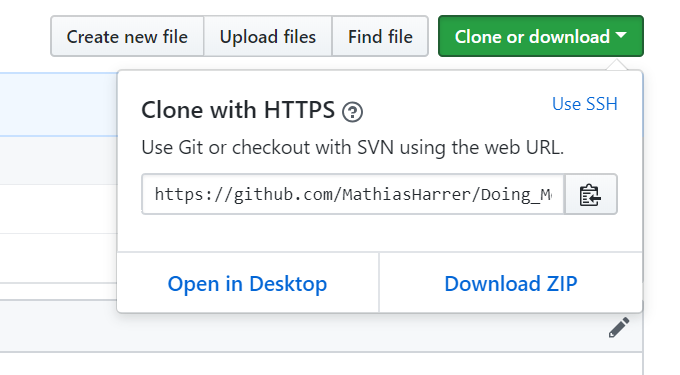

Chapter 1 Doing Meta-Analysis in R
1.1 How to get and run the R code for the guide
We hope you’re enjoying our guide on how to do Meta-Analysis in R. Here’s a description on how you can download the R Code to run your Meta-Analyses yourself.
1.1.1 Accessing the repository
We have stored all R Code in a repository which you can download onto your computer. To access the repository, click View on GitHub on top of this page. There, you can access all code files, and copy & paste them into RStudio.
You can directly download the repository on GitHub by clicking on Clone or Download and then on Download Zip.

In case you are a GitHub user already, you can star the repository to access it more easily in the future.
1.1.2 Downloading the files directly
You can download the entire repository on the top of this site by clicking on Download .zip. This downloads a zip file containing all files onto your computer.
1.1.3 Running the code
Of course, you can run all code one by one if you simply copy and paste the code into RStudio and run it. If you want to run all code in RStudio along with reading the book, an easier way might be to access the R Markdown files in the download folder and run the code chunks in them. Here’s how you do that.
- Save the downloader folder on your computer in a folder where you can easily find it.
- In R Studio, under the Files pane (bottom-left corner), search for the downloaded folder “Doing_Meta_Analysis_in_R-master” and open it.
- In the folder, click on bookdown-demo.Rproj. This opens the R Project with which the all analyses were conducted.
- Now, you can access all the chapters in the guide. They are stored as so-called R Markdown files (
.Rmd) in the same folder and have the following names:
- Chapter 1:
index.Rmd - Chapter 2:
01-rstudio_and_basics.Rmd - Chapter 3:
02-getting_data_in_R.Rmd - Chapter 4:
03-pooling_effect_sizes.Rmd - Chapter 5:
04-forest_plots.Rmd - Chapter 6:
05-heterogeneity.Rmd - Chapter 7:
06-subgroup_analyses.Rmd - Chapter 8:
07-metaregression.Rmd - Chapter 9:
08-publication_bias.Rmd - Chapter 10:
09-risk_of_bias_summary.Rmd - Chapter 11:
10-network_metaanalysis.Rmd - Chapter 12:
11-Effectsizeconverter.Rmd - Chapter 13:
12-power_analysis.Rmd
- Click to open the file you want to see. You’ll see that the files contain the exact same text and code as the one used in the guide, but there are a few lines of code more which are not displayed in the guide. These are needed, for example, to set the layout for the book.
- To run the code chunks between the text, click on the little green arrow on the top-right corner of each code chunk. Once you do this, the code in the chunk is run by R.
Important: most code chunks are not independent, and draw on objects or functions which are created in preceeding chunks. Therefore, you should stick with running one chunk after another, from top to bottom.
We hope these files will make it easier for you to do your on Meta-Analysis in R. If you’re having problems with the download, running the code chunks, or if you stumble upon errors, let us now at mathias.harrer@fau.de
Mathias & David